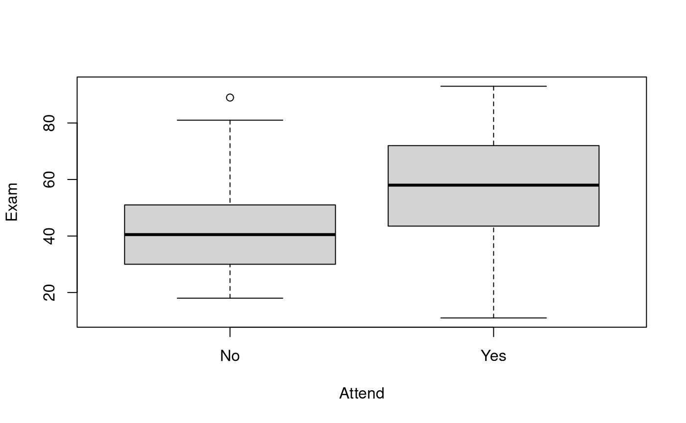
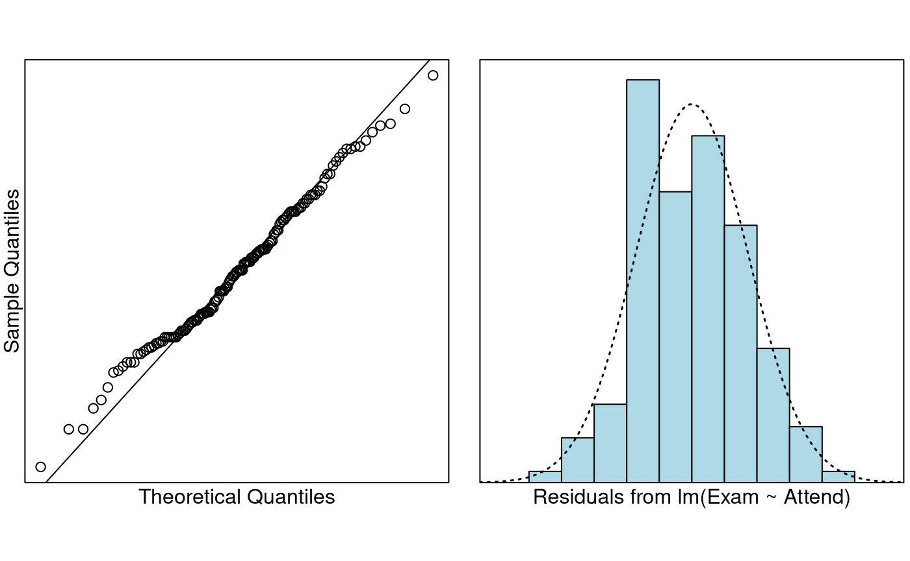

Problem
We wish to determine if regular attendance in class is associated with exam mark. In particular, we want to estimate the expected exam marks of attendees and non-attendees, and predict the actual exam scores of individual attendees and non-attendees.
The variables of interest are:
-
Exam: Exam mark out of 100. -
Attend: A two-level categorical variable which has the levelsYesandNo.
Question of Interest
We want to quantify the relationship between exam marks and attendance. In particular, we want to estimate the expected exam marks of attendees and non-attendees, and predict the actual exam scores of individual attendees and non-attendees.
Read in and Inspect the Data
Stats20x.df = read.table("STATS20x.txt", header = TRUE)
# Could of also used plot(Exam ~ Attend, data = Stats20x.df)
boxplot(Exam ~ Attend, data = Stats20x.df)
The exam marks for the students attended seem to be centred than the students who did not attend lectures regularly. The boxplots look reasonably symmetric in both groups.Model Building and Check Assumptions
normcheck(examAttend.fit)
cooks20x(examAttend.fit)
summary(examAttend.fit)##
## Call:
## lm(formula = Exam ~ Attend, data = Stats20x.df)
##
## Residuals:
## Min 1Q Median 3Q Max
## -46.780 -13.108 -0.217 12.642 46.783
##
## Coefficients:
## Estimate Std. Error t value Pr(>|t|)
## (Intercept) 42.217 2.547 16.578 < 2e-16 ***
## AttendYes 15.563 3.077 5.058 1.27e-06 ***
## ---
## Signif. codes: 0 '***' 0.001 '**' 0.01 '*' 0.05 '.' 0.1 ' ' 1
##
## Residual standard error: 17.27 on 144 degrees of freedom
## Multiple R-squared: 0.1508, Adjusted R-squared: 0.145
## F-statistic: 25.58 on 1 and 144 DF, p-value: 1.271e-06
confint(examAttend.fit)## 2.5 % 97.5 %
## (Intercept) 37.184009 47.25077
## AttendYes 9.480749 21.64447Get additional Prediction Intervals
predAttend.df = data.frame(Attend = c("No", "Yes"))
# Using `interval = "confidence"' to get CI for expected exam score
# for each level of Attend
predict(examAttend.fit, predAttend.df, interval = "confidence")## fit lwr upr
## 1 42.21739 37.18401 47.25077
## 2 57.78000 54.36619 61.19381
# Using `interval = "predition"' to get PI for individual student's exam score
# for each level of Attend
predict(examAttend.fit, predAttend.df, interval = "prediction")## fit lwr upr
## 1 42.21739 7.710259 76.72452
## 2 57.78000 23.471673 92.08833Method and Assumption Checks
We wish to explain exam marks with attendance, a two-level factor. So, we have fitted a linear model with a single explanatory dummy variable. (Note, this is equivalent to conducting a two-sample t-test).
Four non-attending students did unusually well (i.e., large positive residuals), but since the sample size was large, this will be of little consequence. Hence, all model assumptions were satisfied.
Our final model is where . Here if the student regularly attended (i.e., answered “Yes”), otherwise it is zero (i.e. “No”).
Our model explained a small 15% of the variability in the students’ final exam marks.
Executive Summary
We wanted to quantify the relationship between exam marks and attendance.
There was strong evidence that exam marks were higher for students who attend class versus students who didn’t attend class (P-value ). We estimate that regular attendance could increase their expected exam mark between 9.5 to 21.6 exam marks (out of 100).
The expected exam marks of non-attendees and attendees are between 37.2 to 47.3, and 54.4 to 61.2, respectively.
The predicted exam marks for individual non-attendees and attendees are between 7.7 to 76.7, and 23.5 to 92.1, respectively.
Our model only explains 15% of the variability in the students’ final exam marks, this would not be very good for prediction. We can see this in how wide our prediction intervals are.